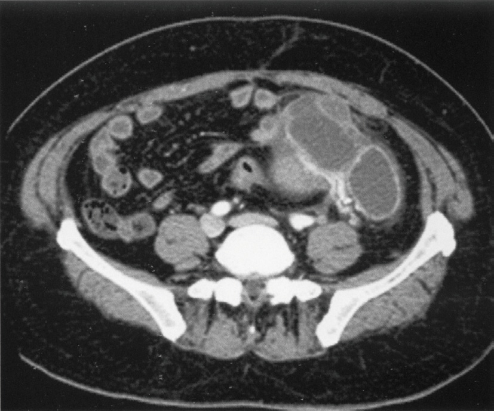
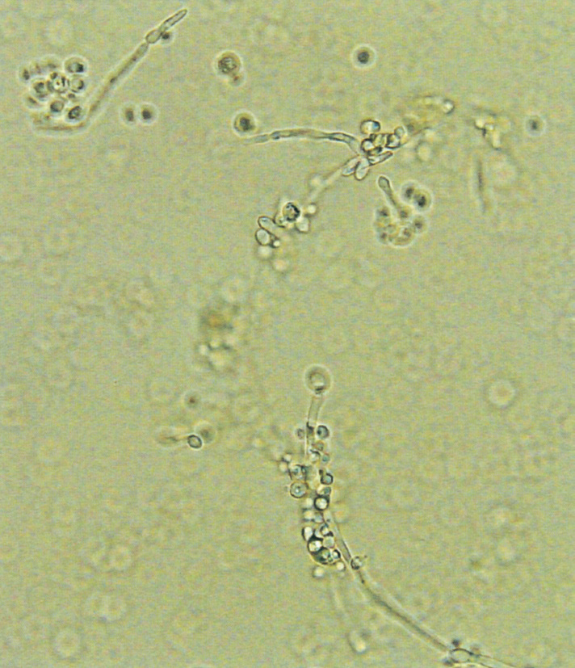
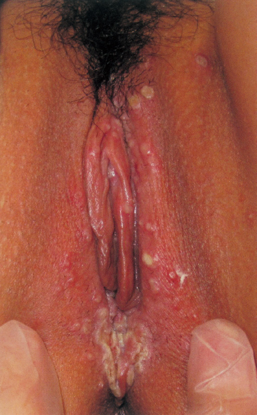
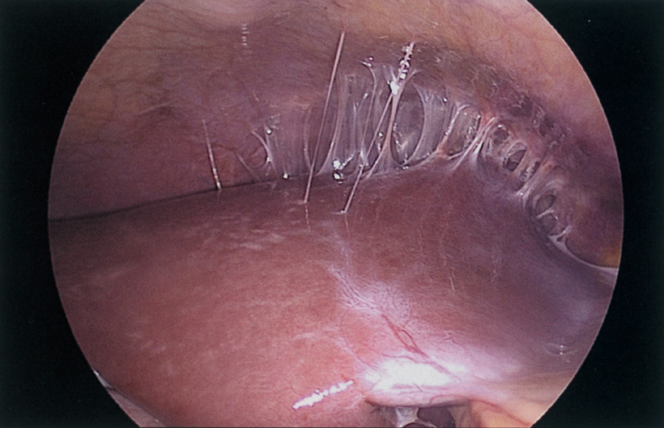
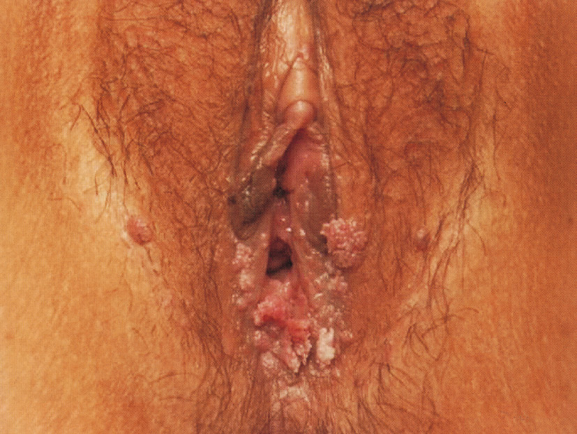
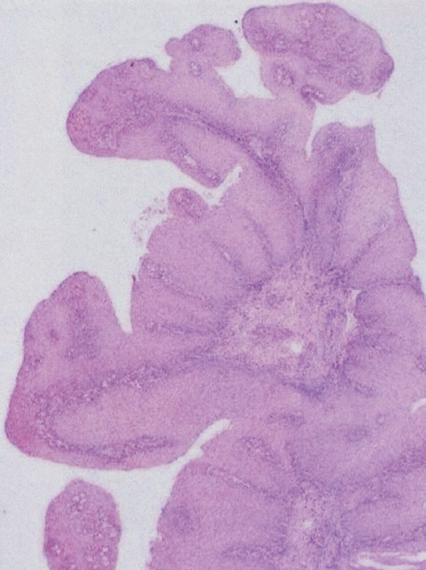
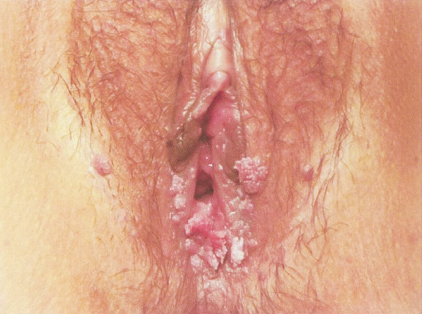
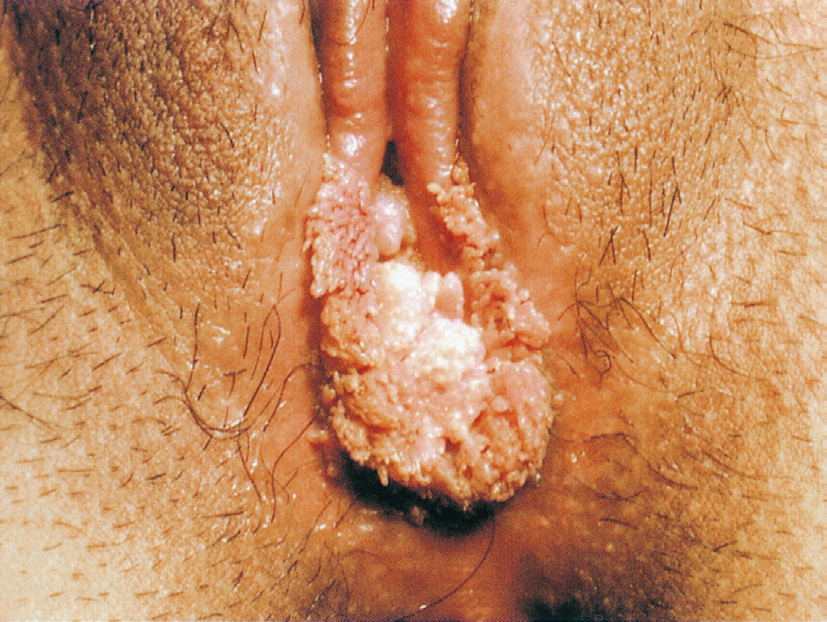

| 所見 | 意味 |
|---|---|
| 38℃台の発熱と下腹部痛 | 急性の骨盤内感染 |
| 内診で子宮頸部の移動痛 | 骨盤内炎症性疾患〈PID〉に最も特徴的な所見。子宮頸部を動かすと付属器・腹膜が牽引されて痛む |
| 左下腹部に圧痛と反跳痛 | 腹膜刺激徴候（骨盤腹膜炎） |
| 白血球16,500（桿状核好中球12％の左方移動）、CRP 9.5mg/dL | 強い細菌感染 |
| 経腟超音波で左付属器領域に径6×3cmの2房性腫瘤 | 膿の貯留した卵管（卵管留膿症）。「ソーセージ様」「retort状」の管状構造として描出される |
| 3年前に離婚し現在は別のパートナーと同居 | 性感染症のリスク |
| 妊娠反応陰性 | 異所性妊娠を否定 |
| アミラーゼ正常、腸雑音正常、ALP正常 | 膵炎・腸閉塞・胆道疾患を否定 |
| 選択肢 | 評価 |
|---|---|
| 便 秘 | 発熱・CRP 9.5mg/dL・白血球増多を説明できない |
| 大腸癌 | 発熱と急性の経過に合わない。腸閉塞なら腸雑音が亢進・金属音を呈する |
| 卵巣癌 | 急性発症の発熱・強い炎症反応は来さない。腹部膨満・腹水・CA125上昇が典型 |
| 大腸憩室炎 | 左下腹部痛・発熱・炎症反応という点では似るが、子宮頸部移動痛は説明できない。また付属器領域の2房性腫瘤も憩室炎では生じない |
| 卵管留膿症 | すべての所見を説明できる |
| 選択肢 | 評価 |
|---|---|
| ａ 便 秘 | 誤り。発熱・炎症反応を説明できない |
| ｂ 大腸癌 | 誤り。急性の発熱・炎症反応に合わない |
| ｃ 卵巣癌 | 誤り。急性の発熱・強い炎症反応は来さない |
| ｄ 大腸憩室炎 | 誤り。子宮頸部移動痛と付属器腫瘤を説明できない |
| ｅ 卵管留膿症 | 正しい。PIDの進展形。子宮頸部移動痛が決め手 |
| 疾患 | 帯下 | 症状 | 診断 | 治療 |
|---|---|---|---|---|
| 腟トリコモナス症 | 黄色泡沫状・悪臭 | 強い瘙痒・腟壁の発赤 | 腟分泌物鏡検で運動する原虫 | メトロニダゾール（パートナーも同時治療） |
| 外陰腟カンジダ症 | 白色酒粕状・カッテージチーズ様 | 強い瘙痒・外陰の発赤 | 鏡検で仮性菌糸・胞子 | 抗真菌薬（腟錠・軟膏） |
| 細菌性腟症 | 灰白色〜黄色調でさらさら、魚臭様（アミン臭） | 瘙痒はないか軽度（炎症所見に乏しい） | pH＞4.5、whiff試験陽性、clue cell | メトロニダゾール |
| 萎縮性腟炎 | 淡血性（点状出血） | 閉経後の乾燥感・性交痛 | 腟粘膜の菲薄化・易出血性 | エストロゲン腟錠 |
| 淋菌性子宮頸管炎 | 膿性 | 無症状〜下腹部痛 | Gram陰性双球菌・核酸増幅法 | セフトリアキソン単回静注 |
| クラミジア子宮頸管炎 | 少量の帯下増加（多くは無症状） | 無症状のことが多い | 核酸増幅法〈PCR〉 | アジスロマイシン等（パートナーも同時治療） |
| 選択肢 | 評価 |
|---|---|
| ａ 血清TPHA | 誤り。梅毒の血清学的検査 |
| ｂ 腟分泌物鏡検 | 正しい。運動する原虫を直接確認できる |
| ｃ コルポスコピー | 誤り。子宮頸部の異型上皮を探す検査 |
| ｄ 腟壁擦過細胞診 | 偶然トリコモナスが見つかることはあるが、診断のために行う検査ではない |
| ｅ 腟分泌物Gram染色 | 誤り。トリコモナスは原虫でGram染色には適さない。淋菌の検出には有用 |
| 選択肢 | 疼痛の有無 |
|---|---|
| バルトリン腺炎 | 痛む。腟前庭後方に片側性の有痛性腫瘤を形成する。導管が閉塞して細菌感染が起こればバルトリン腺膿瘍となり、発赤・熱感・強い疼痛で歩行も困難になる。切開排膿・造袋術を行う |
| 子宮前屈 | 無症状。子宮の前屈は大多数の女性にみられる正常な位置であり疾患ではない |
| 子宮腔癒着 | 無痛。Asherman症候群。症状は過少月経〜子宮性無月経・不妊 |
| 子宮腟部びらん | 無痛。頸管の円柱上皮が外反して見えるだけの生理的変化であることが多い。帯下増加・接触出血を来すことはある |
| 子宮頸管ポリープ | 無痛。症状は接触出血（性交後出血）・帯下増加であって疼痛ではない |
| 疾患 | 疼痛 | 所見 | 治療 |
|---|---|---|---|
| 性器ヘルペス | 強い疼痛・発熱・排尿困難 | 多発する小水疱と浅い潰瘍、鼠径リンパ節の腫大と圧痛 | アシクロビル等の抗ヘルペス薬 |
| 尖圭コンジローマ | 無症状（痛み・痒みなし） | 淡赤色・鶏冠状／乳頭状の隆起性小結節。HPV 6・11型（低リスク型） | イミキモド塗布・凍結療法・切除 |
| 梅毒（第1期） | 無痛性 | 硬結を伴う無痛性潰瘍（硬性下疳）、無痛性の鼠径リンパ節腫脹 | ペニシリン |
| バルトリン腺炎・膿瘍 | 疼痛・腫脹 | 腟前庭後方の片側性の有痛性腫瘤 | 抗菌薬・切開排膿・造袋術 |
| Behçet病 | 疼痛 | 外陰部潰瘍＋口腔内アフタ・ぶどう膜炎・皮膚症状 | ステロイド等 |
| 選択肢 | 評価 |
|---|---|
| ａ 子宮前屈 | 誤り。生理的な子宮の位置で疾患ではない |
| ｂ 子宮腔癒着 | 誤り。過少月経・無月経・不妊が症状 |
| ｃ 子宮腟部びらん | 誤り。生理的変化。帯下増加・接触出血 |
| ｄ バルトリン腺炎 | 正しい。有痛性の腫脹。膿瘍化すれば歩行困難に |
| ｅ 子宮頸管ポリープ | 誤り。接触出血・帯下増加が症状 |
| 選択肢 | 検証 |
|---|---|
| ａ 3か月の避妊が望ましい | 誤り。感染が治癒していれば避妊を指示する理由はない |
| ｂ クラミジア感染症は治癒した | 正しい。症状消失＋DNA検査陰性化 |
| ｃ 異所性妊娠のリスクは低下した | 誤り。炎症で障害された卵管の線毛運動・内腔の癒着は治療後も残るため、異所性妊娠のリスクはむしろ上昇したままである。これが本問の核心 |
| ｄ 子宮性不妊となる可能性が高い | 誤り。クラミジアPIDが起こすのは卵管性不妊であって子宮性不妊（Asherman症候群など）ではない |
| ｅ 今後クラミジア感染症になることはない | 誤り。クラミジア感染に終生免疫は成立せず、何度でも再感染する。パートナーの同時治療とコンドームの使用を指導する |
| 選択肢 | 評価 |
|---|---|
| ａ 3か月の避妊が望ましい。 | 誤り。避妊を指示する理由がない |
| ｂ クラミジア感染症は治癒した。 | 正しい。症状消失＋DNA検査陰性 |
| ｃ 異所性妊娠のリスクは低下した。 | 誤り。卵管の器質的障害は残る |
| ｄ 子宮性不妊となる可能性が高い。 | 誤り。起こるのは卵管性不妊 |
| ｅ 今後クラミジア感染症になることはない。 | 誤り。終生免疫はなく再感染する |

| 疾患 | 帯下 | 症状 | 診断 | 治療 |
|---|---|---|---|---|
| 腟トリコモナス症 | 黄色泡沫状・悪臭 | 強い瘙痒・腟壁の発赤 | 腟分泌物鏡検で運動する原虫 | メトロニダゾール（パートナーも同時治療） |
| 外陰腟カンジダ症 | 白色酒粕状・カッテージチーズ様 | 強い瘙痒・外陰の発赤 | 鏡検で仮性菌糸・胞子 | 抗真菌薬（腟錠・軟膏） |
| 細菌性腟症 | 灰白色〜黄色調でさらさら、魚臭様（アミン臭） | 瘙痒はないか軽度（炎症所見に乏しい） | pH＞4.5、whiff試験陽性、clue cell | メトロニダゾール |
| 萎縮性腟炎 | 淡血性（点状出血） | 閉経後の乾燥感・性交痛 | 腟粘膜の菲薄化・易出血性 | エストロゲン腟錠 |
| 淋菌性子宮頸管炎 | 膿性 | 無症状〜下腹部痛 | Gram陰性双球菌・核酸増幅法 | セフトリアキソン単回静注 |
| クラミジア子宮頸管炎 | 少量の帯下増加（多くは無症状） | 無症状のことが多い | 核酸増幅法〈PCR〉 | アジスロマイシン等（パートナーも同時治療） |
| 選択肢 | 評価 |
|---|---|
| ａ 抗菌薬 | 誤り。むしろカンジダ腟炎を誘発・悪化させる |
| ｂ 抗真菌薬 | 正しい。カンジダは真菌 |
| ｃ 抗ヘルペス薬 | 誤り。ヘルペスは水疱・潰瘍と強い疼痛を来す |
| ｄ 抗トリコモナス薬 | 誤り。トリコモナスは黄色泡沫状帯下 |
| ｅ 副腎皮質ステロイド | 禁忌。真菌感染を増悪させる |

| 所見 | 意味 |
|---|---|
| 7日前に初めて性交渉を経験 | 初感染の潜伏期（2〜10日）と合致 |
| 38.1℃の発熱 | 初感染ではウイルス血症により全身症状を伴う |
| 外陰部の強い疼痛、排尿困難 | 性器ヘルペスの最大の特徴は「強い疼痛」。潰瘍に尿がしみて排尿できず、尿閉に至ることもある（本例は水分摂取も控えている） |
| 両側の鼠径リンパ節の腫大と圧痛 | 所属リンパ節の反応。梅毒の第1期は「無痛性」の鼠径リンパ節腫脹である点と対照的 |
| 外陰部両側に多発する小水疱と浅い潰瘍 | 性器ヘルペスの典型像 |
| 皮膚と眼の所見に異常なし、口腔内アフタなし | Behçet病を否定 |
| 腹部は平坦・軟で圧痛なし | PID・Crohn病の腹部症状はない |
| 疾患 | 疼痛 | 所見 | 治療 |
|---|---|---|---|
| 性器ヘルペス | 強い疼痛・発熱・排尿困難 | 多発する小水疱と浅い潰瘍、鼠径リンパ節の腫大と圧痛 | アシクロビル等の抗ヘルペス薬 |
| 尖圭コンジローマ | 無症状（痛み・痒みなし） | 淡赤色・鶏冠状／乳頭状の隆起性小結節。HPV 6・11型（低リスク型） | イミキモド塗布・凍結療法・切除 |
| 梅毒（第1期） | 無痛性 | 硬結を伴う無痛性潰瘍（硬性下疳）、無痛性の鼠径リンパ節腫脹 | ペニシリン |
| バルトリン腺炎・膿瘍 | 疼痛・腫脹 | 腟前庭後方の片側性の有痛性腫瘤 | 抗菌薬・切開排膿・造袋術 |
| Behçet病 | 疼痛 | 外陰部潰瘍＋口腔内アフタ・ぶどう膜炎・皮膚症状 | ステロイド等 |
| 選択肢 | 評価 |
|---|---|
| ａ Crohn病 | 誤り。腹痛・下痢・体重減少を伴い、外陰部病変は瘻孔・裂溝として現れる |
| ｂ Behçet病 | 誤り。口腔内アフタ・ぶどう膜炎・皮膚症状を伴う。本例はいずれもない |
| ｃ 淋菌感染症 | 誤り。膿性帯下・子宮頸管炎が主で水疱・潰瘍は作らない |
| ｄ クラミジア感染症 | 誤り。多くは無症状で水疱・潰瘍は作らない |
| ｅ 単純ヘルペス感染症 | 正しい。初感染の典型像 |

| 所見 | 意味 |
|---|---|
| 19歳時に骨盤腹膜炎で抗菌薬投与 | 過去のPIDの既往 |
| 両側の卵管水腫 | 炎症後に卵管が閉塞し、内部に漿液が貯留した状態。これが4年間の不妊の原因 |
| 肝周囲の弦状癒着 | Fitz-Hugh-Curtis症候群 |
| 月経周期29日型・整 | 排卵は正常。不妊の原因は卵管因子 |
| 選択肢 | 評価 |
|---|---|
| ａ アニサキス | 誤り。生の海産魚の摂食後の激しい心窩部痛。骨盤内感染は起こさない |
| ｂ クラミジア | 正しい。Fitz-Hugh-Curtis症候群の最多の原因 |
| ｃ リステリア | 誤り。妊婦・新生児の敗血症・髄膜炎の原因菌 |
| ｄ トリコモナス | 誤り。腟炎を起こすが上行感染してPIDにはならない |
| ｅ バクテロイデス | 誤り。嫌気性菌で混合感染に関与するが、Fitz-Hugh-Curtis症候群の主因ではない |


| 疾患 | 疼痛 | 所見 | 治療 |
|---|---|---|---|
| 性器ヘルペス | 強い疼痛・発熱・排尿困難 | 多発する小水疱と浅い潰瘍、鼠径リンパ節の腫大と圧痛 | アシクロビル等の抗ヘルペス薬 |
| 尖圭コンジローマ | 無症状（痛み・痒みなし） | 淡赤色・鶏冠状／乳頭状の隆起性小結節。HPV 6・11型（低リスク型） | イミキモド塗布・凍結療法・切除 |
| 梅毒（第1期） | 無痛性 | 硬結を伴う無痛性潰瘍（硬性下疳）、無痛性の鼠径リンパ節腫脹 | ペニシリン |
| バルトリン腺炎・膿瘍 | 疼痛・腫脹 | 腟前庭後方の片側性の有痛性腫瘤 | 抗菌薬・切開排膿・造袋術 |
| Behçet病 | 疼痛 | 外陰部潰瘍＋口腔内アフタ・ぶどう膜炎・皮膚症状 | ステロイド等 |
| 選択肢 | 評価 |
|---|---|
| ａ イミキモド塗布 | 正しい。局所免疫を賦活しHPV感染細胞を排除する |
| ｂ アシクロビル経口投与 | 誤り。ヘルペスの治療薬 |
| ｃ 副腎皮質ステロイド塗布 | 誤り。ウイルス感染を増悪させうる |
| ｄ メトロニダゾール腟内投与 | 誤り。トリコモナス・細菌性腟症の治療薬 |
| ｅ HPVワクチン接種 | 誤り。予防であって既存病変の治療にはならない |
| 所見 | 意味 |
|---|---|
| 体温37.9℃、脈拍100/分 | 全身の炎症反応 |
| 下腹部の反跳痛 | 腹膜刺激徴候（骨盤腹膜炎） |
| 内診で子宮に圧痛、付属器は痛みのため触知できない | 骨盤内の急性炎症 |
| 腟鏡診で外子宮口に黄色膿性分泌物 | 子宮頸管炎（上行感染の起点） |
| 白血球18,300（桿状核好中球60％の著明な左方移動）、CRP 16mg/dL | 強い細菌感染 |
| 経腟超音波で左卵管のソーセージ様腫大、同部が痛みの最強点 | 急性卵管炎（膿の貯留した卵管） |
| 妊娠反応陰性、最終月経は10日前から5日間 | 異所性妊娠・流産を否定 |
| 最近2年間に2回の人工妊娠中絶手術 | 子宮内操作は上行感染の危険因子。性感染症のリスクも示唆 |
| 選択肢 | 評価 |
|---|---|
| ａ 抗菌薬 | 正しい。クラミジア・淋菌をカバーし直ちに開始する |
| ｂ 整腸薬 | 誤り。腸炎ではない |
| ｃ 抗ウイルス薬 | 誤り。細菌感染である |
| ｄ GnRHアゴニスト | 誤り。子宮筋腫・内膜症の治療薬 |
| ｅ グルココルチコイド | 禁忌に近い。免疫を抑制し感染を悪化させる |
| 疾患 | 帯下 | 症状 | 診断 | 治療 |
|---|---|---|---|---|
| 腟トリコモナス症 | 黄色泡沫状・悪臭 | 強い瘙痒・腟壁の発赤 | 腟分泌物鏡検で運動する原虫 | メトロニダゾール（パートナーも同時治療） |
| 外陰腟カンジダ症 | 白色酒粕状・カッテージチーズ様 | 強い瘙痒・外陰の発赤 | 鏡検で仮性菌糸・胞子 | 抗真菌薬（腟錠・軟膏） |
| 細菌性腟症 | 灰白色〜黄色調でさらさら、魚臭様（アミン臭） | 瘙痒はないか軽度（炎症所見に乏しい） | pH＞4.5、whiff試験陽性、clue cell | メトロニダゾール |
| 萎縮性腟炎 | 淡血性（点状出血） | 閉経後の乾燥感・性交痛 | 腟粘膜の菲薄化・易出血性 | エストロゲン腟錠 |
| 淋菌性子宮頸管炎 | 膿性 | 無症状〜下腹部痛 | Gram陰性双球菌・核酸増幅法 | セフトリアキソン単回静注 |
| クラミジア子宮頸管炎 | 少量の帯下増加（多くは無症状） | 無症状のことが多い | 核酸増幅法〈PCR〉 | アジスロマイシン等（パートナーも同時治療） |
| 選択肢 | 評価 |
|---|---|
| ａ 萎縮性腟炎 | 誤り。閉経後の低エストロゲンによる。帯下は淡血性 |
| ｂ 細菌性腟炎 | 誤り。細菌性腟症の帯下は灰白色〜黄色調で魚臭様（アミン臭）だが、瘙痒や炎症所見に乏しいのが特徴。泡沫状ではない |
| ｃ カンジダ腟炎 | 誤り。帯下は白色酒粕状で外陰の発赤が強い |
| ｄ トリコモナス腟炎 | 正しい。黄色泡沫状帯下＋瘙痒 |
| ｅ クラミジア子宮頸管炎 | 誤り。多くは無症状で泡沫状帯下は来さない |

| 説明 | 検証 |
|---|---|
| ａ 「性交でうつります」 | 正しい。性行為でHPVが皮膚・粘膜の微小な傷から感染する性感染症。パートナーの検索と、他の性感染症（クラミジア・梅毒・HIV）の合併検索も行う |
| ｂ 「今後強い痛みがでてきます」 | 誤り。尖圭コンジローマは無痛性である。強い疼痛が出るのは性器ヘルペス |
| ｃ 「リンパ節を介して全身に広がります」 | 誤り。皮膚・粘膜に限局し、リンパ行性・血行性には広がらない。悪性腫瘍ではない |
| ｄ 「イミキモドというお薬を塗ってください」 | 正しい。局所の自然免疫を賦活してHPV感染細胞を排除する。凍結療法・電気焼灼・切除も選択肢 |
| ｅ 「HPV 18型が原因です」 | 誤り。尖圭コンジローマの原因はHPV 6型・11型（低リスク型）。16型・18型は高リスク型で子宮頸癌の原因となる。ここが最大の引っかけ |
| 疾患 | 疼痛 | 所見 | 治療 |
|---|---|---|---|
| 性器ヘルペス | 強い疼痛・発熱・排尿困難 | 多発する小水疱と浅い潰瘍、鼠径リンパ節の腫大と圧痛 | アシクロビル等の抗ヘルペス薬 |
| 尖圭コンジローマ | 無症状（痛み・痒みなし） | 淡赤色・鶏冠状／乳頭状の隆起性小結節。HPV 6・11型（低リスク型） | イミキモド塗布・凍結療法・切除 |
| 梅毒（第1期） | 無痛性 | 硬結を伴う無痛性潰瘍（硬性下疳）、無痛性の鼠径リンパ節腫脹 | ペニシリン |
| バルトリン腺炎・膿瘍 | 疼痛・腫脹 | 腟前庭後方の片側性の有痛性腫瘤 | 抗菌薬・切開排膿・造袋術 |
| Behçet病 | 疼痛 | 外陰部潰瘍＋口腔内アフタ・ぶどう膜炎・皮膚症状 | ステロイド等 |
| 選択肢 | 評価 |
|---|---|
| ａ 「性交でうつります」 | 正しい。性感染症である |
| ｂ 「今後強い痛みがでてきます」 | 誤り。無痛性。疼痛はヘルペス |
| ｃ 「リンパ節を介して全身に広がります」 | 誤り。皮膚・粘膜に限局する |
| ｄ 「イミキモドというお薬を塗ってください」 | 正しい。免疫賦活薬 |
| ｅ 「HPV 18型が原因です」 | 誤り。6・11型が原因。18型は高リスク型で子宮頸癌の原因 |
| 検査 | 目的 |
|---|---|
| 尿沈渣 | 排尿時痛があり尿路感染症の合併・鑑別に必要 |
| 帯下の細菌培養 | 起炎菌の同定と薬剤感受性を調べる。淋菌の検出に有用 |
| 経腟超音波検査 | 卵管卵巣膿瘍・卵管留膿症・Douglas窩の膿貯留を無侵襲に評価する |
| 帯下の病原体核酸増幅検査 | クラミジア・淋菌のDNAを高感度に検出する。現在の標準的な診断法 |
| 子宮卵管造影検査 | 禁忌。病原体を腹腔内に拡散させる |
| 選択肢 | 評価 |
|---|---|
| ａ 尿沈渣 | 適切。排尿時痛があり尿路感染の鑑別に必要 |
| ｂ 帯下の細菌培養 | 適切。起炎菌の同定と薬剤感受性 |
| ｃ 経腟超音波検査 | 適切。膿瘍形成の評価 |
| ｄ 子宮卵管造影検査 | 適切でない。病原体を腹腔内に拡散させる |
| ｅ 帯下の病原体核酸増幅検査 | 適切。クラミジア・淋菌の検出 |
| 選択肢 | 検証 |
|---|---|
| ａ 潜伏期間は10〜14日である | 誤り。淋菌の潜伏期は2〜7日と短い。これに対しクラミジアは1〜3週間と長い。この差が「性交の数日後に症状」という病歴から淋菌を疑う根拠になる |
| ｂ 淋菌はGram陽性双球菌である | 誤り。淋菌〈Neisseria gonorrhoeae〉はGram陰性双球菌である |
| ｃ 膀胱炎として発症することが多い | 誤り。男性では尿道炎（膿性尿道分泌物と強い排尿痛）、女性では子宮頸管炎として発症する |
| ｄ クラミジアとの混合感染が90％にみられる | 誤り。混合感染は20〜30％程度で、90％は明らかに過大。ただし頻度が高いため淋菌を検出したらクラミジアも必ず検索し、治療も両者をカバーする |
| ｅ ニューキノロン系抗菌薬に対する耐性株が増加している | 正しい。薬剤耐性が国際的に大きな問題となっており、ペニシリン・テトラサイクリン・ニューキノロンへの耐性が広がった。現在の第一選択はセフトリアキソンの単回静注 |
| 疾患 | 帯下 | 症状 | 診断 | 治療 |
|---|---|---|---|---|
| 腟トリコモナス症 | 黄色泡沫状・悪臭 | 強い瘙痒・腟壁の発赤 | 腟分泌物鏡検で運動する原虫 | メトロニダゾール（パートナーも同時治療） |
| 外陰腟カンジダ症 | 白色酒粕状・カッテージチーズ様 | 強い瘙痒・外陰の発赤 | 鏡検で仮性菌糸・胞子 | 抗真菌薬（腟錠・軟膏） |
| 細菌性腟症 | 灰白色〜黄色調でさらさら、魚臭様（アミン臭） | 瘙痒はないか軽度（炎症所見に乏しい） | pH＞4.5、whiff試験陽性、clue cell | メトロニダゾール |
| 萎縮性腟炎 | 淡血性（点状出血） | 閉経後の乾燥感・性交痛 | 腟粘膜の菲薄化・易出血性 | エストロゲン腟錠 |
| 淋菌性子宮頸管炎 | 膿性 | 無症状〜下腹部痛 | Gram陰性双球菌・核酸増幅法 | セフトリアキソン単回静注 |
| クラミジア子宮頸管炎 | 少量の帯下増加（多くは無症状） | 無症状のことが多い | 核酸増幅法〈PCR〉 | アジスロマイシン等（パートナーも同時治療） |
| 選択肢 | 評価 |
|---|---|
| ａ 潜伏期間は10〜14日である。 | 誤り。2〜7日と短い |
| ｂ 淋菌はGram陽性双球菌である。 | 誤り。Gram陰性双球菌 |
| ｃ 膀胱炎として発症することが多い。 | 誤り。男性は尿道炎、女性は子宮頸管炎 |
| ｄ クラミジアとの混合感染が90％にみられる。 | 誤り。20〜30％程度 |
| ｅ ニューキノロン系抗菌薬に対する耐性株が増加している。 | 正しい。現在の第一選択はセフトリアキソン |
| ウイルス | 母乳感染 |
|---|---|
| HTLV-1 | 母乳中の感染リンパ球を介して感染する。完全人工栄養（断乳）により感染率を約3分の1に下げられる。短期母乳（90日以内）・凍結母乳も選択肢だが完全人工栄養が最も確実 |
| HIV | 母乳中に含まれるウイルスにより感染する。わが国では完全人工栄養が原則。あわせて妊娠中の抗ウイルス療法・選択的帝王切開・児への予防投与を組み合わせて母子感染をほぼ完全に防げる |
| 経路 | 主な病原体 |
|---|---|
| 経胎盤（子宮内）感染 | トキソプラズマ・風疹・サイトメガロウイルス・梅毒・パルボウイルスB19 |
| 産道感染 | B群溶血性連鎖球菌〈GBS〉・単純ヘルペスウイルス・B型肝炎ウイルス・HPV（6・11型 → 新生児の再発性呼吸器乳頭腫症）・クラミジア（新生児結膜炎・肺炎）・淋菌 |
| 母乳感染 | ヒトT細胞白血病ウイルス〈HTLV-1〉・ヒト免疫不全ウイルス〈HIV〉 |
| 選択肢 | 評価 |
|---|---|
| ａ E型肝炎ウイルス | 誤り。経口感染（生肉・ジビエ）が主。妊婦が感染すると劇症化しやすいが母乳感染はしない |
| ｂ インフルエンザウイルス | 誤り。飛沫感染であり母乳を介さない。むしろ授乳は継続してよい |
| ｃ HIV | 正しい。母乳感染するため完全人工栄養とする |
| ｄ HPV | 誤り。産道感染であり母乳感染はしない |
| ｅ HTLV-Ⅰ | 正しい。母乳中の感染リンパ球を介する |
| 組合せ | 検証 |
|---|---|
| ａ 細菌性腟症 ― 黄色調 | 正しい。腟内の乳酸桿菌が減少しGardnerella等の嫌気性菌が増殖した状態。帯下は灰白色〜黄色調でさらさらとし、魚臭様（アミン臭）を伴う。「腟炎」ではなく「腟症」と呼ぶのは、炎症所見（発赤・瘙痒）に乏しいため |
| ｂ 萎縮性腟炎 ― 淡血性 | 正しい。閉経後の低エストロゲンにより腟粘膜が菲薄化・易出血性となり、点状出血を伴う淡血性の帯下を呈する |
| ｃ 腟カンジダ症 ― 泡沫状 | 誤り。カンジダの帯下は白色酒粕状（カッテージチーズ様）。泡沫状はトリコモナス |
| ｄ クラミジア頸管炎 ― 膿性 | 誤り。クラミジアは多くが無症状で、あっても少量の帯下増加にとどまる。膿性帯下は淋菌性子宮頸管炎の特徴である |
| ｅ トリコモナス腟炎 ― 酒粕状 | 誤り。トリコモナスの帯下は黄色泡沫状。酒粕状はカンジダ |
| 疾患 | 帯下 | 症状 | 治療 |
|---|---|---|---|
| 腟トリコモナス症 | 黄色泡沫状・悪臭 | 強い瘙痒・腟壁の発赤 | メトロニダゾール（パートナーも同時治療） |
| 外陰腟カンジダ症 | 白色酒粕状・カッテージチーズ様 | 強い瘙痒・外陰の発赤 | 抗真菌薬 |
| 細菌性腟症 | 灰白色〜黄色調でさらさら、魚臭様（アミン臭） | 瘙痒はないか軽度（炎症所見に乏しい） | メトロニダゾール |
| 萎縮性腟炎 | 淡血性（点状出血） | 閉経後の乾燥感・性交痛 | エストロゲン腟錠 |
| 淋菌性子宮頸管炎 | 膿性 | 無症状〜下腹部痛 | セフトリアキソン単回静注 |
| クラミジア子宮頸管炎 | 少量の帯下増加（多くは無症状） | 無症状のことが多い | アジスロマイシン等（パートナーも同時治療） |
| 選択肢 | 評価 |
|---|---|
| ａ 細菌性腟症 ― 黄色調 | 正しい。灰白色〜黄色調・アミン臭 |
| ｂ 萎縮性腟炎 ― 淡血性 | 正しい。腟粘膜の菲薄化・易出血性 |
| ｃ 腟カンジダ症 ― 泡沫状 | 誤り。白色酒粕状 |
| ｄ クラミジア頸管炎 ― 膿性 | 誤り。多くは無症状。膿性は淋菌 |
| ｅ トリコモナス腟炎 ― 酒粕状 | 誤り。黄色泡沫状 |
| 選択肢 | 検証 |
|---|---|
| ａ 瘙痒を生じる | 正しい。強い瘙痒と外陰の発赤が主症状 |
| ｂ 帯下は泡沫状である | 誤り。カンジダの帯下は白色酒粕状（カッテージチーズ様）。泡沫状はトリコモナス腟炎 |
| ｃ 抗菌薬服用後に多い | 正しい。抗菌薬が腟内の常在菌（乳酸桿菌）を減らし、真菌であるカンジダが増殖する。その他妊娠・糖尿病・免疫抑制状態・ステロイド使用も誘因 |
| ｄ 原因菌は消化管に常在している | 正しい。Candida albicansは消化管・腟・皮膚の常在真菌であり、外部から感染するのではなく、常在菌が異常増殖して発症する。したがって性感染症ではなく、パートナーの治療は原則不要 |
| ｅ 腟分泌物の鏡検で菌糸が確認できる | 正しい。分岐する仮性菌糸と出芽する胞子を認める。KOH処理すると観察しやすい |
| 疾患 | 帯下 | 症状 | 治療 |
|---|---|---|---|
| 腟トリコモナス症 | 黄色泡沫状・悪臭 | 強い瘙痒・腟壁の発赤 | メトロニダゾール（パートナーも同時治療） |
| 外陰腟カンジダ症 | 白色酒粕状・カッテージチーズ様 | 強い瘙痒・外陰の発赤 | 抗真菌薬 |
| 細菌性腟症 | 灰白色〜黄色調でさらさら、魚臭様（アミン臭） | 瘙痒はないか軽度（炎症所見に乏しい） | メトロニダゾール |
| 萎縮性腟炎 | 淡血性（点状出血） | 閉経後の乾燥感・性交痛 | エストロゲン腟錠 |
| 淋菌性子宮頸管炎 | 膿性 | 無症状〜下腹部痛 | セフトリアキソン単回静注 |
| クラミジア子宮頸管炎 | 少量の帯下増加（多くは無症状） | 無症状のことが多い | アジスロマイシン等（パートナーも同時治療） |
| 選択肢 | 評価 |
|---|---|
| ａ 瘙痒を生じる。 | 正しい。強い瘙痒が主症状 |
| ｂ 帯下は泡沫状である。 | 誤り。白色酒粕状。泡沫状はトリコモナス |
| ｃ 抗菌薬服用後に多い。 | 正しい。常在細菌叢の破綻による |
| ｄ 原因菌は消化管に常在している。 | 正しい。常在真菌の異常増殖で発症し、性感染症ではない |
| ｅ 腟分泌物の鏡検で菌糸が確認できる。 | 正しい。仮性菌糸と胞子 |
| 選択肢 | 検証 |
|---|---|
| ａ 子宮頸管炎として発症する | 正しい。女性では子宮頸管炎（膿性帯下）として発症するが、無症状のことも多い。男性では強い症状の尿道炎として発症する |
| ｂ Gram陽性球菌が認められる | 誤り。淋菌〈Neisseria gonorrhoeae〉はGram陰性双球菌であり、好中球内に貪食された像（細胞内Gram陰性双球菌）が特徴的 |
| ｃ 潜伏期間は4〜6か月である | 誤り。淋菌の潜伏期は2〜7日と短い。クラミジアは1〜3週間とやや長い |
| ｄ 女性では骨盤内炎症性疾患〈PID〉に進展する | 正しい。子宮頸管から子宮内膜・卵管・骨盤腹膜へ上行し、卵管性不妊・異所性妊娠の原因となる。肝周囲まで及べばFitz-Hugh-Curtis症候群 |
| ｅ PCR法の感度はGram染色と同等である | 誤り。核酸増幅法〈PCR〉のほうがはるかに感度が高い。とくに女性の子宮頸管検体ではGram染色の感度は低く、現在の標準的な診断法は核酸増幅法である |
| 選択肢 | 評価 |
|---|---|
| ａ 子宮頸管炎として発症する。 | 正しい |
| ｂ Gram陽性球菌が認められる。 | 誤り。Gram陰性双球菌 |
| ｃ 潜伏期間は4〜6か月である。 | 誤り。2〜7日と短い |
| ｄ 女性ではPIDに進展する。 | 正しい。卵管性不妊・異所性妊娠の原因 |
| ｅ PCR法の感度はGram染色と同等である。 | 誤り。PCRのほうが高感度 |
| 疾患 | クラミジアとの関係 |
|---|---|
| 骨盤腹膜炎 | 上行感染の直接の帰結。下腹部痛・発熱を来す。さらに肝周囲まで及べばFitz-Hugh-Curtis症候群（肝周囲炎）となり、腹腔鏡で肝表面の弦状癒着〈violin string adhesion〉を認める |
| 不妊症 | 炎症により卵管が閉塞・癒着し、線毛運動が障害される。卵管性不妊の最大の原因。同じ機序で異所性妊娠のリスクも上昇する |
| 子宮頸癌 | 原因はハイリスク型HPVであってクラミジアではない |
| 子宮内膜症 | 原因は月経血の逆流などであり感染症ではない |
| 尖圭コンジローマ | 原因はHPV 6・11型 |
| 選択肢 | 評価 |
|---|---|
| ａ 不妊症 | 正しい。卵管の閉塞・癒着による卵管性不妊 |
| ｂ 子宮頸癌 | 誤り。原因はハイリスク型HPV |
| ｃ 骨盤腹膜炎 | 正しい。上行感染の直接の帰結 |
| ｄ 子宮内膜症 | 誤り。感染症ではない |
| ｅ 尖圭コンジローマ | 誤り。原因はHPV 6・11型 |
| 疾患 | 瘙痒 |
|---|---|
| 萎縮性腟炎 | 瘙痒あり。閉経後の低エストロゲンで腟・外陰の粘膜が萎縮・乾燥し、乾燥感・瘙痒・灼熱感・性交痛を来す |
| 接触性皮膚炎 | 瘙痒あり。ナプキン・下着・石鹸などによるアレルギー性／刺激性の皮膚炎 |
| 外陰ヘルペス | 瘙痒をきたしにくい。主症状は強い疼痛であり、水疱・潰瘍が形成されて排尿困難に至ることもある。「痒い」ではなく「痛い」病気 |
| トリコモナス腟炎 | 瘙痒あり。黄色泡沫状帯下と強い瘙痒 |
| 外陰腟カンジダ症 | 瘙痒あり。白色酒粕状帯下と強い瘙痒。外陰の発赤も強い |
| 疾患 | 疼痛 | 所見 | 治療 |
|---|---|---|---|
| 性器ヘルペス | 強い疼痛・発熱・排尿困難 | 多発する小水疱と浅い潰瘍、鼠径リンパ節の腫大と圧痛 | アシクロビル等の抗ヘルペス薬 |
| 尖圭コンジローマ | 無症状（痛み・痒みなし） | 淡赤色・鶏冠状の隆起性小結節。HPV 6・11型（低リスク型） | イミキモド塗布・凍結療法・切除 |
| 梅毒（第1期） | 無痛性 | 硬性下疳（無痛性潰瘍）、無痛性の鼠径リンパ節腫脹 | ペニシリン |
| バルトリン腺炎・膿瘍 | 疼痛・腫脹 | 腟前庭後方の片側性の有痛性腫瘤 | 抗菌薬・切開排膿・造袋術 |
| Bowen病 | 無痛 | 外陰の表皮内扁平上皮癌。境界明瞭な紅斑・角化 | 切除 |
| 選択肢 | 評価 |
|---|---|
| ａ 萎縮性腟炎 | 瘙痒あり。低エストロゲンによる乾燥 |
| ｂ 接触性皮膚炎 | 瘙痒あり。アレルギー性・刺激性 |
| ｃ 外陰ヘルペス | 瘙痒をきたしにくい。主症状は強い疼痛 |
| ｄ トリコモナス腟炎 | 瘙痒あり。黄色泡沫状帯下を伴う |
| ｅ 外陰腟カンジダ症 | 瘙痒あり。白色酒粕状帯下を伴う |
| 疾患 | 疼痛 | 所見 | 治療 |
|---|---|---|---|
| 性器ヘルペス | 強い疼痛・発熱・排尿困難 | 多発する小水疱と浅い潰瘍、鼠径リンパ節の腫大と圧痛 | アシクロビル等の抗ヘルペス薬 |
| 尖圭コンジローマ | 無症状（痛み・痒みなし） | 淡赤色・鶏冠状の隆起性小結節。HPV 6・11型（低リスク型） | イミキモド塗布・凍結療法・切除 |
| 梅毒（第1期） | 無痛性 | 硬性下疳（無痛性潰瘍）、無痛性の鼠径リンパ節腫脹 | ペニシリン |
| バルトリン腺炎・膿瘍 | 疼痛・腫脹 | 腟前庭後方の片側性の有痛性腫瘤 | 抗菌薬・切開排膿・造袋術 |
| Bowen病 | 無痛 | 外陰の表皮内扁平上皮癌。境界明瞭な紅斑・角化 | 切除 |
| 選択肢 | 評価 |
|---|---|
| ａ アデノウイルス | 誤り。咽頭結膜熱・流行性角結膜炎の原因 |
| ｂ 単純ヘルペスウイルス | 誤り。強い疼痛を伴う水疱・潰瘍を作る |
| ｃ サイトメガロウイルス | 誤り。経胎盤感染が問題となる |
| ｄ ヒト免疫不全ウイルス | 誤り。外陰部に特異的病変を作らない |
| ｅ ヒトパピローマウイルス | 正しい。6・11型が尖圭コンジローマの原因 |
| 疾患 | 潰瘍の有無 |
|---|---|
| 性器ヘルペス | 潰瘍を作る。多発する小水疱が破れて浅く有痛性の潰瘍となる。強い疼痛・発熱・鼠径リンパ節腫大を伴う |
| Bowen病 | 潰瘍を作らない。外陰の表皮内扁平上皮癌で、境界明瞭な紅斑・角化性の局面として現れる |
| カンジダ症 | 潰瘍を作らない。外陰の発赤・浮腫と白色酒粕状帯下、強い瘙痒 |
| トリコモナス症 | 潰瘍を作らない。黄色泡沫状帯下と瘙痒。子宮腟部に点状出血（いちご状頸部）を認めることはある |
| 尖圭コンジローマ | 潰瘍を作らない。隆起性の鶏冠状小結節で無症状 |
| 疾患 | 疼痛 | 所見 | 治療 |
|---|---|---|---|
| 性器ヘルペス | 強い疼痛・発熱・排尿困難 | 多発する小水疱と浅い潰瘍、鼠径リンパ節の腫大と圧痛 | アシクロビル等の抗ヘルペス薬 |
| 尖圭コンジローマ | 無症状（痛み・痒みなし） | 淡赤色・鶏冠状の隆起性小結節。HPV 6・11型（低リスク型） | イミキモド塗布・凍結療法・切除 |
| 梅毒（第1期） | 無痛性 | 硬性下疳（無痛性潰瘍）、無痛性の鼠径リンパ節腫脹 | ペニシリン |
| バルトリン腺炎・膿瘍 | 疼痛・腫脹 | 腟前庭後方の片側性の有痛性腫瘤 | 抗菌薬・切開排膿・造袋術 |
| Bowen病 | 無痛 | 外陰の表皮内扁平上皮癌。境界明瞭な紅斑・角化 | 切除 |
| 選択肢 | 評価 |
|---|---|
| ａ Bowen病 | 誤り。表皮内扁平上皮癌。紅斑・角化性局面 |
| ｂ カンジダ症 | 誤り。発赤・瘙痒と酒粕状帯下 |
| ｃ 性器ヘルペス | 正しい。小水疱が破れて浅い有痛性潰瘍を形成 |
| ｄ トリコモナス症 | 誤り。黄色泡沫状帯下と瘙痒 |
| ｅ 尖圭コンジローマ | 誤り。隆起性の鶏冠状小結節 |
| 選択肢 | 評価 |
|---|---|
| ａ 黄褐色 | 誤り。灰白色が典型（黄色調を帯びることはある）。「黄褐色」という表現は該当しない |
| ｂ 泡沫状 | 誤り。トリコモナス腟炎の帯下 |
| ｃ pH＜3.0 | 誤り。乳酸桿菌が減少するためpHはむしろ4.5より高くなる |
| ｄ アミン臭 | 正しい。嫌気性菌が産生するアミンによる魚臭様の悪臭 |
| ｅ シダ状結晶 | 誤り。排卵期の頸管粘液を乾燥させたときに見られる生理的所見 |
| 疾患 | 疼痛 |
|---|---|
| 梅毒 | 無痛性。第1期の硬性下疳は硬い無痛性の潰瘍で、鼠径リンパ節腫脹も無痛性。このため患者が気づかず放置し、第2期へ進むことが多い |
| 性器ヘルペス | 強い疼痛。多発する小水疱が破れて浅い潰瘍となり、初感染では発熱・排尿困難を伴い歩行も困難になる |
| トリコモナス症 | 疼痛は主症状でない。黄色泡沫状帯下と強い瘙痒 |
| 尖圭コンジローマ | 無症状。痛みも痒みもない隆起性の鶏冠状小結節 |
| 性器クラミジア感染症 | 多くは無症状。外陰部に病変を作らず、上行してPIDを起こす |
| 疾患 | 疼痛 | 所見 | 治療 |
|---|---|---|---|
| 性器ヘルペス | 強い疼痛・発熱・排尿困難 | 多発する小水疱と浅い潰瘍、鼠径リンパ節の腫大と圧痛 | アシクロビル等の抗ヘルペス薬 |
| 尖圭コンジローマ | 無症状（痛み・痒みなし） | 淡赤色・鶏冠状の隆起性小結節。HPV 6・11型（低リスク型） | イミキモド塗布・凍結療法・切除 |
| 梅毒（第1期） | 無痛性 | 硬性下疳（無痛性潰瘍）、無痛性の鼠径リンパ節腫脹 | ペニシリン |
| バルトリン腺炎・膿瘍 | 疼痛・腫脹 | 腟前庭後方の片側性の有痛性腫瘤 | 抗菌薬・切開排膿・造袋術 |
| Bowen病 | 無痛 | 外陰の表皮内扁平上皮癌。境界明瞭な紅斑・角化 | 切除 |
| 選択肢 | 評価 |
|---|---|
| ａ 梅 毒 | 誤り。硬性下疳は無痛性 |
| ｂ 性器ヘルペス | 正しい。強い疼痛が主症状 |
| ｃ トリコモナス症 | 誤り。瘙痒と黄色泡沫状帯下 |
| ｄ 尖圭コンジローマ | 誤り。無症状 |
| ｅ 性器クラミジア感染症 | 誤り。多くは無症状 |

| 選択肢 | 検証 |
|---|---|
| ａ 妊娠の継続は可能である | 正しい。尖圭コンジローマも軽度異形成も妊娠継続の妨げにはならない。コンジローマは妊娠中に増大しやすいが産後に縮小することが多い |
| ｂ 子宮頸癌発症リスクが高い | 誤り。尖圭コンジローマの原因であるHPV 6・11型は低リスク型で癌化しない。（細胞診クラスⅢaは別問題として精査するが、コンジローマ自体が頸癌リスクを高めるわけではない） |
| ｃ 新生児産道感染は起こらない | 誤り。分娩時に産道でHPVに感染し、新生児が再発性呼吸器乳頭腫症〈若年性喉頭乳頭腫〉を発症しうる。稀ではあるが治療に難渋する |
| ｄ コルポスコピィ検査が必要である | 正しい。細胞診クラスⅢa（軽度異形成疑い）では、コルポスコピィで病変の位置を特定し狙い組織診を行うのが原則。妊娠中でもコルポスコピィは安全に施行できる |
| ｅ HPV 6または11型感染である | 正しい。尖圭コンジローマの原因はHPV 6・11型（低リスク型） |
| 疾患 | 疼痛 | 所見 | 治療 |
|---|---|---|---|
| 性器ヘルペス | 強い疼痛・発熱・排尿困難 | 多発する小水疱と浅い潰瘍、鼠径リンパ節の腫大と圧痛 | アシクロビル等の抗ヘルペス薬 |
| 尖圭コンジローマ | 無症状（痛み・痒みなし） | 淡赤色・鶏冠状の隆起性小結節。HPV 6・11型（低リスク型） | イミキモド塗布・凍結療法・切除 |
| 梅毒（第1期） | 無痛性 | 硬性下疳（無痛性潰瘍）、無痛性の鼠径リンパ節腫脹 | ペニシリン |
| バルトリン腺炎・膿瘍 | 疼痛・腫脹 | 腟前庭後方の片側性の有痛性腫瘤 | 抗菌薬・切開排膿・造袋術 |
| Bowen病 | 無痛 | 外陰の表皮内扁平上皮癌。境界明瞭な紅斑・角化 | 切除 |
| 選択肢 | 評価 |
|---|---|
| ａ 妊娠の継続は可能である。 | 正しい。妊娠継続の妨げにならない |
| ｂ 子宮頸癌発症リスクが高い。 | 誤り。6・11型は低リスク型で癌化しない |
| ｃ 新生児産道感染は起こらない。 | 誤り。再発性呼吸器乳頭腫症を起こしうる |
| ｄ コルポスコピィ検査が必要である。 | 正しい。細胞診クラスⅢaの精査 |
| ｅ HPV 6または11型感染である。 | 正しい。尖圭コンジローマの原因 |
| 病原体 | PIDの原因となるか |
|---|---|
| 淋菌 | PIDの原因となる。子宮頸管炎から子宮内膜・卵管・骨盤腹膜へ上行する。潜伏期が短く症状が強い |
| クラミジア | PIDの原因となる。無症状のまま上行し、気づかぬうちに卵管を閉塞させる。Fitz-Hugh-Curtis症候群の原因 |
| トリコモナス | 原因とならない。腟に留まり腟炎を起こすのみ。上行感染しない |
| 単純ヘルペスウイルス | 原因とならない。外陰・腟の局所に水疱・潰瘍を作る |
| ヒトパピローマウイルス | 原因とならない。尖圭コンジローマ（6・11型）・子宮頸癌（16・18型）の原因 |
| 選択肢 | 評価 |
|---|---|
| ａ 淋 菌 | 正しい。子宮頸管炎から上行 |
| ｂ クラミジア | 正しい。無症状のまま上行し卵管を閉塞させる |
| ｃ トリコモナス | 誤り。腟に留まり上行しない |
| ｄ 単純ヘルペスウイルス | 誤り。外陰・腟の局所病変 |
| ｅ ヒトパピローマウイルス | 誤り。尖圭コンジローマ・子宮頸癌の原因 |
| 部位 | 評価 |
|---|---|
| 子宮頸管 | 感染部位。腟鏡診で黄色の分泌物 ＝ 子宮頸管炎の所見。最初の感染部位であり、夫からの性行為感染の入口 |
| 卵 管 | 感染部位。昨夜から増強する下腹部痛、内診で右下腹部の圧痛、体温37.5℃ ＝ 上行して卵管炎（PID）を起こしている。腫瘤を触知しないので卵管卵巣膿瘍にはまだ至っていない |
| 腟 | 感染部位でない。腟は重層扁平上皮でクラミジアは感染しない。外陰と腟に瘙痒感はないという記載が、トリコモナス・カンジダなどの腟炎を明確に否定している |
| 尿 道 | 男性では尿道炎が主体だが、女性では本例に排尿時痛の記載がなく感染部位として挙げられない |
| 膀 胱 | 感染部位でない。クラミジアは膀胱炎を起こさない |
| 選択肢 | 評価 |
|---|---|
| ａ 腟 | 誤り。重層扁平上皮でクラミジアは感染しない。瘙痒感もない |
| ｂ 尿 道 | 誤り。排尿時痛の記載がない |
| ｃ 卵 管 | 正しい。下腹部痛・圧痛・発熱＝上行した卵管炎 |
| ｄ 膀 胱 | 誤り。クラミジアは膀胱炎を起こさない |
| ｅ 子宮頸管 | 正しい。黄色の分泌物＝子宮頸管炎 |